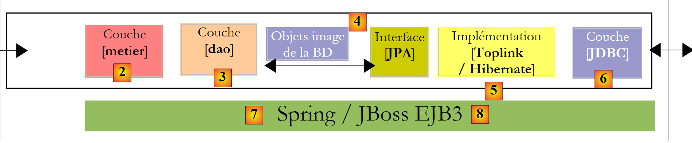
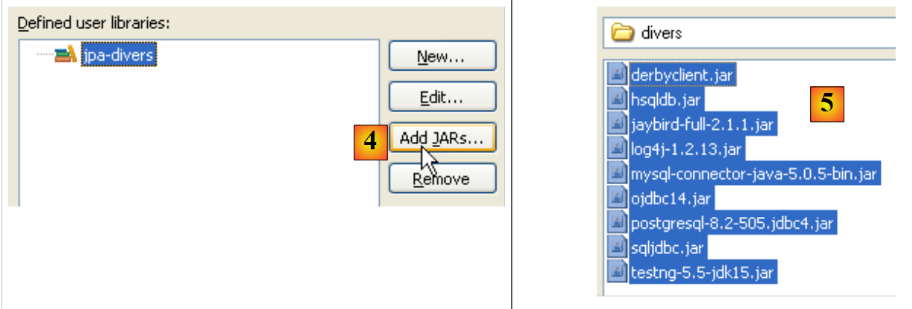

1. مقدمة
1.1. الأهداف
يمكن الاطلاع على نسخة PDF من الوثيقة |هنا|.
الأمثلة الواردة في الوثيقة متاحة |هنا|.
الهدف هنا هو استكشاف المفاهيم الرئيسية لاستمرارية البيانات باستخدام واجهة برمجة تطبيقات JPA (Java Persistence API). بعد قراءة هذا المستند واختبار الأمثلة، سيكون القارئ قد اكتسب الأسس اللازمة ليتمكن من الاعتماد على نفسه.
تعد واجهة برمجة تطبيقات JPA جديدة نسبيًا. فهي متاحة فقط منذ إصدار JDK 1.5. وتحتل طبقة JPA مكانها في بنية متعددة المستويات. دعونا ننظر إلى بنية ثلاثية المستويات شائعة إلى حد ما:
 |
- الطبقة [1]، المشار إليها هنا بـ [ui] (واجهة المستخدم)، هي الطبقة التي تتفاعل مع المستخدم عبر واجهة المستخدم الرسومية Swing أو واجهة وحدة التحكم أو واجهة الويب. وتتمثل مهمتها في توفير البيانات من المستخدم إلى الطبقة [2] أو عرض البيانات التي توفرها الطبقة [2] للمستخدم.
- الطبقة [2]، المشار إليها هنا بـ [business]، هي الطبقة التي تطبق ما يُسمى بقواعد العمل — أي المنطق الخاص بالتطبيق — دون الاهتمام بمصدر البيانات التي تتلقاها أو وجهة النتائج التي تنتجها.
- الطبقة [3]، المشار إليها هنا بـ [DAO] (كائن الوصول إلى البيانات)، هي الطبقة التي تزود الطبقة [2] بالبيانات المخزنة مسبقًا (الملفات وقواعد البيانات وما إلى ذلك) وتخزن بعض النتائج التي توفرها الطبقة [2].
- الطبقة [JDBC] هي الطبقة القياسية المستخدمة في Java للوصول إلى قواعد البيانات. ويُشار إليها عادةً باسم برنامج تشغيل JDBC الخاص بنظام إدارة قواعد البيانات (DBMS).
بذلت جهود عديدة لتسهيل كتابة هذه الطبقات المختلفة على المطورين. ومن بين هذه الجهود، يهدف JPA إلى تبسيط تطوير طبقة [DAO]، التي تدير ما يُسمى بالبيانات الدائمة، ومن هنا جاء اسم واجهة برمجة التطبيقات (Java Persistence API). أحد الحلول التي اكتسبت زخمًا في السنوات الأخيرة في هذا المجال هو Hibernate:
 |
تقع طبقة [Hibernate] بين طبقة [DAO] التي يكتبها المطور وطبقة [JDBC]. Hibernate هو ORM (تعيين الكائنات والعلاقات)، وهو أداة تربط بين عالم قواعد البيانات العلائقية وعالم الكائنات التي تعالجها Java. لم يعد مطور طبقة [DAO] يرى طبقة [JDBC] أو جداول قاعدة البيانات التي يرغب في استخدام محتواها. بل يرى فقط تمثيل الكائنات لقاعدة البيانات، الذي توفره طبقة [Hibernate]. يتم إنشاء الجسر بين جداول قاعدة البيانات والكائنات التي تتعامل معها طبقة [DAO] بشكل أساسي بطريقتين:
- عبر ملفات التكوين بنمط XML
- من خلال تعليقات Java في الكود، وهي تقنية متاحة فقط منذ JDK 1.5
طبقة [Hibernate] هي طبقة تجريدية مصممة لتكون شفافة قدر الإمكان. الهدف المثالي هو ألا يدرك مطور طبقة [DAO] على الإطلاق أنه يعمل مع قاعدة بيانات. وهذا ممكن إذا لم يكن هو من يكتب التكوين الذي يربط بين عالم العلاقات وعالم الكائنات. تكوين هذا الجسر أمر دقيق للغاية ويتطلب بعض الخبرة.
يُطلق على طبقة الكائنات [4]، التي تعكس قاعدة البيانات، اسم "سياق الاستمرارية". تقوم طبقة [DAO] القائمة على Hibernate بتنفيذ عمليات الاستمرارية (CRUD: إنشاء، قراءة، تحديث، حذف) على الكائنات في سياق الاستمرارية؛ ويقوم Hibernate بترجمة هذه العمليات إلى عبارات SQL. بالنسبة لعمليات استعلام قاعدة البيانات (SQL SELECT)، يوفر Hibernate للمطورين لغة HQL (لغة استعلام Hibernate) لاستعلام سياق الاستمرارية [4] بدلاً من قاعدة البيانات نفسها.
يحظى Hibernate بشعبية كبيرة ولكنه معقد لإتقانه. منحنى التعلم، الذي غالبًا ما يُصوَّر على أنه سهل، هو في الواقع شديد الانحدار. بمجرد أن يكون لديك قاعدة بيانات تحتوي على جداول تتميز بعلاقات واحد إلى كثير أو كثير إلى كثير، فإن تكوين الجسر بين العلاقات والكائنات يتجاوز قدرات المبتدئ العادي. وقد تؤدي أخطاء التكوين بعد ذلك إلى تطبيقات ذات أداء ضعيف.
في العالم التجاري، كان هناك منتج مكافئ لـ Hibernate يُسمى Toplink:
 |
في ضوء النجاح الذي حققته منتجات ORM، قررت شركة Sun، مطورة لغة Java، توحيد طبقة ORM من خلال مواصفة تُعرف باسم JPA، والتي تم إصدارها بالتزامن مع إصدار Java 5. وقد تم تطبيق مواصفة JPA من قِبل كل من Toplink التابع لشركة وHibernate. أما Toplink، الذي كان منتجًا تجاريًا، فقد أصبح منذ ذلك الحين مفتوح المصدر. وبفضل JPA، أصبحت البنية السابقة كما يلي:
 |
تتفاعل طبقة [DAO] الآن مع مواصفات JPA، وهي مجموعة من الواجهات. وقد استفاد المطورون من هذا التوحيد. في السابق، إذا قام مطور بتغيير طبقة ORM الخاصة به، كان عليه أيضًا تغيير طبقة [DAO] الخاصة به، والتي تمت كتابتها للتفاعل مع ORM محدد. الآن، سيقومون بكتابة طبقة [DAO] تتفاعل مع طبقة JPA. بغض النظر عن المنتج الذي ينفذ طبقة JPA، تظل الواجهة المقدمة لطبقة [DAO] كما هي.
سيقدم هذا المستند أمثلة على JPA في مجالات مختلفة:
- أولاً، سنركز على الجسر العلائقي/الكائني الذي تبنيه طبقة ORM. سيتم إنشاء هذا باستخدام تعليقات Java 5 للقاعدة البيانات التي نجد فيها علاقات الجداول من النوع:
- واحد إلى واحد
- واحد إلى العديد
- كثير إلى كثير
لتوضيح هذا المجال، سننشئ بنى الاختبار التالية:
 |
ستكون برامج الاختبار الخاصة بنا عبارة عن تطبيقات وحدة التحكم التي تستعلم طبقة JPA مباشرةً. وبذلك، سنستكشف الطرق الرئيسية لطبقة JPA. سنعمل في بيئة تُعرف باسم "Java SE" (الإصدار القياسي). تعمل JPA في بيئات Java SE وJava EE5 (الإصدار المؤسسي) على حد سواء.
- بمجرد إتقاننا لكل من تكوين جسر العلاقات/الكائنات واستخدام أساليب طبقة JPA، سنعود إلى بنية متعددة الطبقات أكثر تقليدية:
 |
سيتم الوصول إلى طبقة [JPA] عبر بنية ذات مستويين تتكون من طبقتي [الأعمال] و[DAO]. وسيتم استخدام إطار عمل Spring [7]، متبوعًا بحاوية JBoss EJB3، لربط هذه الطبقات معًا.
ذكرنا سابقًا أن JPA متاح في بيئتي SE و EE5. توفر بيئة Java EE5 العديد من الخدمات للوصول إلى البيانات الدائمة، بما في ذلك مجمعات الاتصال ومديري المعاملات والمزيد. قد يكون من المفيد للمطور الاستفادة من هذه الخدمات. لم يتم اعتماد بيئة Java EE5 على نطاق واسع بعد (مايو 2007). وهي متاحة حاليًا على Sun Application Server 9.x (Glassfish). خادم التطبيقات هو في الأساس خادم تطبيقات ويب. إذا قمت بإنشاء تطبيق رسومي مستقل باستخدام Swing، فلن تتمكن من الاستفادة من بيئة EE والخدمات التي توفرها. وهذا يمثل مشكلة. بدأنا نرى بيئات EE "مستقلة"، أي تلك التي يمكن استخدامها خارج خادم التطبيقات. وهذا هو الحال مع JBos EJB3، الذي سنستخدمه في هذا المستند.
في بيئة EE5، يتم تنفيذ الطبقات بواسطة كائنات تسمى EJBs (Enterprise Java Beans). في الإصدارات السابقة من EE، كان يُنظر إلى EJBs (EJB 2.x) على أنها صعبة التنفيذ والاختبار، وأحيانًا كان أداؤها أقل من المتوقع. يتم التمييز بين حبوب "الكيان" EJB 2.x وحبوب "الجلسة" EJB 2.x. باختصار، يتوافق "الكيان" EJB 2.x مع صف في جدول قاعدة البيانات، و"الجلسة" EJB 2.x هي كائن يُستخدم لتنفيذ طبقات [الأعمال] و[DAO] في بنية متعددة الطبقات. أحد الانتقادات الرئيسية للطبقات التي تم تنفيذها باستخدام EJBs هو أنها لا يمكن استخدامها إلا داخل حاويات EJB، وهي خدمة توفرها بيئة EE. وهذا يجعل اختبار الوحدة مشكلة. وبالتالي، في الرسم البياني أعلاه، سيتطلب اختبار الوحدة لطبقات [الأعمال] و[DAO] التي تم إنشاؤها باستخدام EJBs إعداد خادم تطبيقات، وهي عملية مرهقة إلى حد ما ولا تشجع المطور حقًا على إجراء الاختبارات بشكل متكرر.
تم إنشاء إطار عمل Spring استجابةً لتعقيد EJB2. يوفر Spring، ضمن بيئة SE، عددًا كبيرًا من الخدمات التي توفرها عادةً بيئات EE. وبالتالي، في قسم "استمرارية البيانات" الذي يهمنا هنا، يوفر Spring مجموعات الاتصال ومديري المعاملات التي تتطلبها التطبيقات. وقد عزز ظهور Spring ثقافة اختبار الوحدات، التي أصبح تنفيذها فجأة أسهل بكثير. يسمح Spring بتنفيذ طبقات التطبيقات باستخدام كائنات Java القياسية (POJOs، Plain Old/Ordinary Java Objects)، مما يتيح إعادة استخدامها في سياقات أخرى. أخيرًا، يدمج العديد من أدوات الجهات الخارجية بشكل شفاف إلى حد ما، ولا سيما أدوات الاستمرارية مثل Hibernate و iBatis و...
تم تصميم Java EE 5 لمعالجة أوجه القصور في مواصفات EE السابقة. تطورت EJB 2.x إلى EJB 3. هذه كائنات POJO مزودة بعلامات تحددها ككائنات خاصة عندما تكون داخل حاوية EJB 3. داخل الحاوية، يمكن لـ EJB3 الاستفادة من خدمات الحاوية (مجمع الاتصالات، مدير المعاملات، إلخ). خارج حاوية EJB3، يصبح EJB3 كائن Java قياسي. يتم تجاهل تعليقات EJB الخاصة به.
أعلاه، قمنا بتصوير Spring وJBoss EJB3 كبنية تحتية (إطار عمل) محتملة لهندستنا متعددة المستويات. هذه البنية التحتية هي التي ستوفر الخدمات التي نحتاجها: تجمع اتصالات ومدير معاملات.
- مع Spring، سيتم تنفيذ الطبقات باستخدام POJOs. ستصل هذه إلى خدمات Spring (مجمع الاتصالات، مدير المعاملات) من خلال حقن التبعية في هذه POJOs: عند إنشائها، يقوم Spring بحقن مراجع إلى الخدمات التي ستحتاجها.
-
JBoss EJB3 هو حاوية EJB قادرة على العمل خارج خادم التطبيقات. مبدأ تشغيلها (من وجهة نظر المطور) مشابه للمبدأ الموصوف لـ Spring. سنجد بعض الاختلافات.
-
سنختتم هذا المستند بمثال لتطبيق ويب ثلاثي الطبقات — بسيط ولكنه تمثيلي:
 |
1.2. المراجع
[ref1]: Java Persistence with Hibernate، بقلم كريستيان باور وغافين كينغ، نشرته دار مانينغ.
[ref1] هو الوثيقة التي شكلت الأساس لما يلي. وهو كتاب شامل يزيد عدد صفحاته عن 800 صفحة حول استخدام Hibernate ORM في سياقين مختلفين: مع أو بدون JPA. ولا يزال استخدام Hibernate بدون JPA مناسبًا بالفعل للمطورين الذين يستخدمون JDK 1.4 أو إصدارات أقدم، حيث لم يظهر JPA إلا في JDK 1.5.
بعد أن قرأت أكثر من ثلاثة أرباع الكتاب وتصفحت الباقي، أدركت أن كل ما ورد في هذا العمل مفيد. يجب أن يكون مستخدم Hibernate المتمرس على دراية بجميع المعلومات الواردة في هذه الصفحات الثماني مائة تقريبًا. لقد كان كريستيان باور وغافين كينغ دقيقين في عرضهما، لكنهما نادرًا ما ذهبوا إلى حد وصف مواقف لن يواجهها المرء أبدًا. كل ما في الكتاب يستحق القراءة. الكتاب مكتوب بأسلوب تعليمي: هناك جهد حقيقي لعدم ترك أي شيء غامض. حقيقة أنه كُتب لاستخدام Hibernate مع JPA وبدونها تشكل تحديًا لأولئك المهتمين بإحدى هاتين التقنيتين فقط. على سبيل المثال، يصف المؤلفان، باستخدام أمثلة عديدة، الجسر العلائقي/الكائني في كلا السياقين. المفاهيم المستخدمة متشابهة جدًا لأن JPA مستوحاة بشكل كبير من Hibernate. ولكن هناك بعض الاختلافات. لدرجة أن ما ينطبق على Hibernate قد لا ينطبق على JPA، وهذا يؤدي في النهاية إلى إرباك القارئ.
يقدم المؤلفون أمثلة لتطبيقات ثلاثية الطبقات في سياق حاوية EJB3. ولا يتطرقون إلى Spring. سنرى في أحد الأمثلة أن Spring أسهل في الاستخدام وله نطاق أوسع من حاوية JBoss EJB3 المستخدمة في [المرجع 1]. ومع ذلك، فإن "Java Persistence with Hibernate" هو كتاب ممتاز أوصي به لجميع الأساسيات التي يعلمها حول ORMs.
يعد استخدام ORM أمرًا معقدًا للمبتدئين.
- هناك مفاهيم يجب فهمها من أجل تكوين جسر العلاقة/الكائن.
- هناك مفهوم سياق الاستمرارية مع مفاهيمه الخاصة بالكائنات في حالة "مستمرة" أو "منفصلة" أو "جديدة"
- هناك آليات تتعلق بالاستمرارية (المعاملات، تجمعات الاتصال)، وهي عادةً خدمات يقدمها الحاوية
- هناك إعدادات متعلقة بالأداء يجب تكوينها (ذاكرة التخزين المؤقت من المستوى الثاني)
- ...
سنقدم هذه المفاهيم باستخدام أمثلة. لن نتعمق في النظرية الكامنة وراءها. هدفنا ببساطة هو، في كل حالة، تمكين القارئ من فهم المثال واستيعابه إلى الحد الذي يمكنه من إجراء تعديلات بنفسه أو تطبيقه في سياق مختلف.
1.3. الأدوات المستخدمة
تستخدم الأمثلة الواردة في هذا المستند الأدوات التالية. تم وصف بعضها في الملاحق (التنزيل، التثبيت، التهيئة، الاستخدام). في مثل هذه الحالات، نقدم رقم الفقرة ورقم الصفحة.
- JDK 1.6 (القسم 5.1)
- بيئة تطوير Java Eclipse 3.2.2 (القسم 5.2)
- المكوّن الإضافي Eclipse WTP (حزمة أدوات الويب) (القسم 5.2.3)
- المكوّن الإضافي Eclipse SQL Explorer (القسم 5.2.6)
- المكوّن الإضافي Eclipse Hibernate Tools (القسم 5.2.5)
- المكوّن الإضافي Eclipse TestNG (القسم 5.2.4)
- حاوية السيرفلت Tomcat 5.5.23 (القسم 5.3)
- نظام إدارة قواعد البيانات Firebird 2.1 (القسم 5.4)
- نظام إدارة قواعد البيانات MySQL 5 (القسم 5.5)
- نظام إدارة قواعد البيانات PostgreSQL (القسم 5.6)
- نظام إدارة قواعد البيانات Oracle 10g Express (القسم 5.7)
- نظام إدارة قواعد البيانات SQL Server 2005 Express (القسم 5.8)
- نظام إدارة قواعد البيانات HSQLDB (القسم 5.9)
- نظام إدارة قواعد البيانات Apache Derby (القسم 5.10)
- Spring 2.1 (القسم 5.11)
- حاوية JBoss EJB3 (القسم 5.12)
1.4. تنزيل المثال e
على موقع الويب الخاص بهذا المستند، يمكن تنزيل الأمثلة الواردة كملف ZIP، والذي عند استخراجه، ينشئ المجلد التالي:
 |
- في [1]: بنية الدليل للأمثلة
- في [2]: يحتوي المجلد <annexes> على العناصر المعروضة في قسم الملاحق، الفقرة 5. وعلى وجه الخصوص، يحتوي المجلد <jdbc> على برامج تشغيل JDBC لنظم إدارة قواعد البيانات المستخدمة في أمثلة البرنامج التعليمي.
- في [3]: يجمع المجلد <lib> أرشيفات .jar المختلفة المستخدمة في البرنامج التعليمي في 5 مجلدات
- [4]: يحتوي المجلد <lib/divers> على الأرشيفات: - برامج تشغيل JDBC لنظام إدارة قواعد البيانات - لأداة اختبار الوحدات [TestNG] - أداة التسجيل [log4j]
 |
- في [5]: أرشيفات تطبيق JPA/Hibernate والأدوات الخارجية التي يتطلبها Hibernate
- في [6]: أرشيفات تنفيذ JPA/TopLink
- في [7]: أرشيفات Spring 2.x والأدوات الخارجية التي يتطلبها Spring
- في [8]: أرشيفات حاوية JBoss EJB3
 |
- في [9]: يحتوي المجلد <hibernate> على أمثلة تستخدم طبقة الاستمرارية JPA/Hibernate
- في [10]: يحتوي المجلد <hibernate/direct> على أمثلة حيث تُستخدم طبقة JPA مباشرةً مع برنامج من النوع [Main].
- في [11] و[12]: أمثلة يتم فيها استخدام طبقة JPA عبر طبقات [business] و[DAO] في بنية متعددة الطبقات، وهي حالة الاستخدام القياسية. يتم توفير الخدمات (مجمع الاتصالات، مدير المعاملات) التي تستخدمها طبقات [business] و[DAO] إما بواسطة Spring [11] أو بواسطة JBoss EJB3 [12].
 |
- في [13]: يتضمن المجلد <toplink> الأمثلة الموجودة في المجلد <hibernate> [9]، ولكن هذه المرة مع طبقة ثبات JPA/Toplink بدلاً من JPA/Hibernate. لا يوجد مجلد <jbossejb3> في [13] لأنه لم يكن من الممكن الحصول على مثال يعمل حيث يتم توفير طبقة الثبات بواسطة Toplink والخدمات بواسطة حاوية JBoss EJB3.
- في [14]: يحتوي مجلد <web> على ثلاثة أمثلة لتطبيقات الويب مع طبقة استمرارية JPA:
- [15]: مثال يستخدم Spring / JPA / Hibernate
- [16]: نفس المثال باستخدام Spring / JPA / Toplink
- [17]: نفس المثال باستخدام JBoss EJB3 / JPA / Hibernate. لا يعمل هذا المثال، على الأرجح بسبب مشكلة تكوين لم يتم حلها. ومع ذلك، فقد تم تضمينه حتى يتمكن القارئ من فحصه وربما إيجاد حل لهذه المشكلة.
يشير البرنامج التعليمي بشكل متكرر إلى بنية الدليل هذه، خاصة عند اختبار الأمثلة التي يتم تناولها. يُنصح القراء بتنزيل هذه الأمثلة وتثبيتها. فيما يلي، سنشير إلى بنية الدليل الموضحة أعلاه باسم <examples>.
1.5. -تكوين مشروع Eclipse للأمثلة
تستخدم الأمثلة مكتبات "المستخدم". وهي عبارة عن أرشيفات .jar مجمعة تحت اسم واحد. عندما يتم تضمين مثل هذه المكتبة في مسار فئة مشروع Java، يتم تضمين جميع الأرشيفات التي تحتوي عليها في مسار الفئة هذا. دعونا نرى كيفية القيام بذلك في Eclipse:
 |
- في [1]: [Window / Preferences / Java / Build Path / User Libraries]
- في [2]: قم بإنشاء مكتبة جديدة
- في [3]: قم بتسميتها وتأكيد
 |
- في [4]: حدد ملفات JAR التي ستكون جزءًا من مكتبة [jpa-divers]
- في [5]: حدد جميع ملفات JAR من المجلد <examples>/lib/divers
 |
- في [6]: تم تعريف مكتبة المستخدم [jpa-divers]
- في [7]: كرر نفس العملية لإنشاء 4 مكتبات أخرى:
المكتبة | مجلد JAR للمكتبة |
<examples>/lib/hibernate | |
<examples>/lib/toplink | |
<examples>/lib/spring | |
<examples>/lib/jbossejb3 |